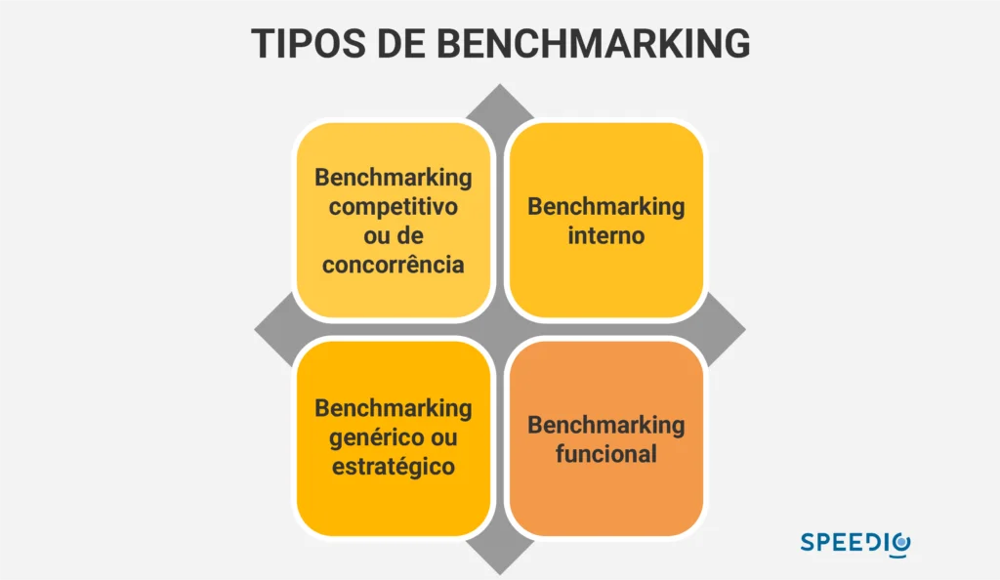

Artigos da Categoria
Como vender mais e melhor
Para que sua empresa venda cada vez mais, ela precisa avaliar seu próprio cenário, considerando também o comportamento do mercado. Isso porque existem vários contextos empresariais, e cada um deles pode apresentar questões próprias que as impede de vender mais. Em outras palavras, cada caso é um caso.
Vemos empresas que já possuem uma pequena estrutura de máquina de vendas, com uma cadência de geração de demanda, cálculo de CAC e uso de CRM. Por outro lado, há empresas que ainda estão pensando em estruturar um time de vendas ou que não têm um setor comercial claro, além dos profissionais liberais.
Neste post você verá
Conhecer o mercado onde está inserido
Uma empresa bem sucedida, quando começa a se estruturar, utiliza uma série de ferramentas administrativas e financeiras para fazer um planejamento estratégico. Este planejamento é feito a partir de uma análise criteriosa das oportunidades e ameaças do cenário externo (mercado), e também dos pontos fortes e fracos (cenário interno).
No entanto, boa parte dos negócios brasileiros não são estruturados de forma criteriosa e organizada. Muitos empresários, de fato, não conhecem exatamente o mercado em que se inserem e nem mesmo as variáveis do próprio negócio.
E isso se torna um grande problema na hora da venda B2B, porque uma venda complexa depende de confiança entre as partes envolvidas. E se o prospect demonstra saber mais sobre seu mercado e seus concorrentes do que você, faltará segurança para evoluir a negociação. Ou seja, é a perda de uma oportunidade de venda para a concorrência.
Conhecer profundamente seu negócio e seu mercado de atuação, fazer benchmarking e ter boas práticas de gestão é fundamental para ter um bom desempenho nas vendas. Se, por exemplo, você oferece um serviço que não tem boa escalabilidade, sabe que terá um limite de vendas. E tudo isso deve ser considerado pela estrutura comercial.

Tenha um posicionamento agressivo no mercado
Ainda neste contexto de desconhecimento sobre o próprio negócio, outro erro comum que impede é a falta de posicionamento. O que seria isso? Na prática, vender tudo para todos.
Diariamente, vemos empresas com desejo de investir pessoas, ótimas ferramentas, mídia paga, inbound e outbound marketing, mas que não se posicionam sobre o principal: seu negócio resolve o problema de quem?
Por mais que seja tentador querer abranger todo mundo para aumentar as vendas, essa prática não é eficiente quando o assunto é prospecção de leads. Isso atrapalha bastante o processo comercial, especialmente quando envolve vendas de empresa para empresa.
O motivo é simples: quando se tem um funil de vendas inflado com leads que não são o alvo certo, eles dificilmente se tornarão clientes. Isso prejudica a taxa de conversão e o trabalho do time de vendas, que perderá tempo em contatos sem nexo ao invés de se dedicar a negociações com potencial real de fechamento.
Por isso, é essencial definir quem é seu cliente ideal que pagará pelo produto ou serviço que você vende e que percebe valor em sua oferta. Ter um ICP é um bom começo, pois seu processo comercial será orientado para encontrar e negociar com esse perfil.
Ter uma estrutura comercial organizada
O desconhecimento sobre o negócio, o mercado e o posicionamento impedem as empresas de vender mais. Como consequência disso, é comum que elas também tenham uma estrutura comercial desorganizada.
O empresário que não organiza sua estrutura de vendas pode acreditar que, para prospectar mais, é só colocar mais vendedor. Essa prática pode causar mais problemas, inclusive financeiros, porque não trará o retorno esperado.
Uma estrutura comercial desorganizada é incapaz de saber de onde vem os leads da empresa, o número de leads que o time de vendas contacta diariamente, a abordagem a esses leads, o tempo gasto para negociação e outros dados.
Outro sinal de que a estrutura comercial pode estar enfrentando problemas é o CRM desatualizado. É preciso ter em mente que o histórico de clientes deve ser da empresa, e não do vendedor. Dessa forma, independentemente do profissional, existe visibilidade das informações dos leads.
Se as ferramentas de gestão também não são alimentadas de forma correta, é impossível estruturar o processo comercial.
Ter um método de vendas
Dentro de uma estrutura comercial organizada, sempre existe um método de vendas bem definido. Afinal, as estratégias de Inbound Marketing e Inbound Sales seguem um fluxo que otimizam as atividades das áreas e proporcionam um melhor atendimento ao consumidor final.
Por isso, um dos erros que impedem sua empresa de prosperar é exatamente não ter um método de prospecção ou cadência de leads bem definido. Além disso, um profissional liberal, por exemplo, pode até não ter uma estrutura comercial, mas se tiver um bom método, eu arriscaria a dizer que ele conseguirá atingir seus objetivos.
O método serve, de maneira simples, para que os profissionais não percam tempo com leads desqualificados que não fecham o negócio. Isso aumenta o custo da prospecção que sequer ocorre.
Por isso, ao definir o caminho para alcançar a finalidade, com etapas bem específicas, as equipes conseguem trabalhar melhor. Ou seja, para não desistir rápido demais, nem demorar demais ao tratar um cliente em potencial ou oportunidades de negócio.
Se um novo vendedor entrar na empresa, ele não terá tantas dificuldades em entender qual sua posição dentro do fluxo. Como a venda é uma sequência de ações, se elas estão bem delimitadas, cada profissional realiza suas tarefas seguindo um procedimento.
Você se lembra do funil de vendas, certo? Ele define etapas para a jornada do comprador, com gatilhos que o ajudam a passar de um nível para outro. O número de leads diminui a cada etapa, e o processo para o fechamento da venda evolui de forma natural. Existe um método para levar o lead no decorrer do funil.
Da mesma forma, deve existir métodos para os vendedores identificarem o melhor momento para certas abordagens. Ele deve saber em que etapa o lead se encontra para saber qual o atendimento apropriado.
para sua empresa
Calcular o CAC da empresa
O custo de aquisição de clientes é o custo que uma empresa possui para conquistar cada novo cliente ou para transformar um prospect em um cliente após o trabalho da equipe. Assim, para calcular o CAC, o gestor deve considerar desde a atração de visitantes até o fechamento da compra.
Essa é uma métrica fundamental para que você consiga vender mais. Mesmo assim, muitos gestores não fazem o cálculo do CAC. Em geral, isso acontece devido à falta de controle sobre o processo de vendas e marketing.
Para medir o CAC, é preciso definir um período, mapear os custos com marketing e vendas nesse período, e identificar o número de clientes conquistados. Por fim, basta somar os custos dos investimentos e dividi-los pelo total pelo número de clientes conquistados.
Se o gestor não sabe quais são os custos com campanhas, anúncios, vendas e outros esforços para gerar leads, realmente é impossível calcular o CAC.
O problema é que o cálculo dessa métrica é muito importante para que o gestor consiga adotar estratégias como o outbound para baixar o CAC e melhorar o desempenho da empresa. Com isso, poderia otimizar investimentos e aumentar a eficiência dos times que ajudam a vender mais. Sem o CAC, isso fica bem difícil.
Definir quais são as métricas e indicadores mais importante
Acabamos de mencionar o CAC como uma métrica fundamental para o time de vendas. Muitos gestores criam estratégias de vendas sem definir KPIs para analisar o desempenho das ações. Esse é um dos erros mais comuns que impedem uma empresa de vender mais.
As métricas subsidiam os tomadores de decisão com informações relevantes para que a melhor escolha seja tomada . Por meio delas, é possível medir, validar e corrigir o fluxo de vendas para que ele alcance os objetivos do negócio.
No mesmo sentido, com a visibilidade das métricas, o time de vendas pode ficar mais alinhado, o que cria maior consciência a respeito das responsabilidades de cada profissional e da finalidade comum para a qual todos trabalham.
Se não há qualquer definição de métricas, o gestor não consegue fazer muito com os dados gerados. Afinal, não saberá quais informações são realmente necessárias e quais respondem às perguntas fundamentais da estrutura comercial.
Taxa de conversão, ticket-médio, ciclo de vendas e outros indicadores operacionais (número de leads e de contatos efetivados) devem estar na estratégia da empresa para vender mais.
Monte uma equipe de vendas de sucesso para vender mais
Imagine um cenário em que a empresa possua uma estrutura comercial organizada e um bom método de vendas. Os processos estão todos alinhados, mas existe um problema que a impede de vender mais: um time de vendas de baixa performance.
Em geral, isso acontece por falta de capacitação desse time. Profissionais de vendas devem conhecer o negócio e o processo comercial da empresa, dominar as técnicas e metodologias de vendas, e trabalhar bem em equipe. Mas esse não é o cenário comum nas empresas, que sofrem com um nível de performance abaixo do esperado.
Quando existe uma rotina contínua de qualificação e treinamento, os profissionais conseguem aprimorar técnicas de prospecção, negociação e tipos de vendas, além de se desenvolverem dentro da cultura organizacional.
Certas situações acabam sendo evitadas, por exemplo: um vendedor pode oferecer um desconto ao cliente sem que ele peça. Essa atitude ansiosa e eufórica é uma das técnicas de vendas que pode prejudicar bastante as finanças empresariais.
Outro cenário que decorre da falta de capacitação do time de vendas é o desvio de função. Em algumas empresas, o próprio gestor assume o papel de vendas, focando mais nas metas individuais do que nas coletivas.
Ele também pode ser demandado, em alguns momentos, para se direcionar à parte gerencial, e não na prospecção. Isso causa uma instabilidade nas vendas, porque não existe alguém integralmente dedicado às metas definidas na estrutura comercial.
Por isso, um time capacitado também quer dizer um time totalmente focado nas vendas, desde o atendimento do cliente até o pós-venda. Se você quer vender mais, não deixe que seu time resolva questões de outras áreas. É preciso seguir um caminho específico para alcançar os objetivos.
Adotar uma abordagem proativa em vendas
A partir do momento em que uma pessoa começa a atividade empresarial, ela deve ter em mente algo fundamental: a audiência não passa na sua porta sem esforço. Esse é um pensamento comum de muitos empresários que os impede de alavancar suas vendas.
Não basta ter site e redes sociais se essas mídias não são movimentadas da forma que deve, dentro de um método de marketing e vendas bem definido. De maneira simples, vender é uma prática proativa. É preciso fazer algo ao invés de esperar que outras pessoas indiquem seu negócio.
Quando o empresário não investe minimamente em estratégias de vendas, ele se torna dependente de indicações. O resultado é que o tamanho da sua empresa atinge apenas o tamanho que o mercado deseja, não o tamanho que o empresário quer ter. É um alcance limitado.
Um bom exemplo de uma equipe de vendas passivo é o “vendedor-robô”. Ele fica animado quando o prospect pede uma apresentação institucional, mas se esconde atrás dessa apresentação. Não existe uma postura ativa para investigar os desejos daquele prospect ou para gerar maior valor e atraí-lo para a conversão.
Sem entender qual a dor do cliente que sua oferta solucionará, é muito difícil fechar uma venda. Caímos, novamente, no primeiro ponto que impede sua empresa de vender mais: falta de posicionamento.
O vendedor-robô é passivo e joga para o cliente a responsabilidade de comprar o produto ou serviço. E isso certamente não dará certo.
Produzir conteúdo no LinkedIn
Gerar oportunidades de vendas com o marketing digital é uma das estratégias muito conhecidas por empresários de sucesso. Eles utilizam diversas mídias, inclusive redes sociais, para amplificar suas ações e aumentar a prospecção.
Um dos erros que impedem sua empresa de vender é não seguir essa estratégia, especialmente quando falamos de LinkedIn. O costume é recorrer ao Instagram e ao Facebook, mas muitos se esquecem que a rede social do mundo dos negócios é realmente o LinkedIn e por isso é tão importante saber usufruir ao máximo desta plataforma.
Especialmente para quem atua nas áreas de vendas B2B, é um lugar para criar autoridade e fazer conexões que podem amplificar suas vendas. A rede não se limita a expor currículos, mas ajuda a expor a marca corporativa, o que o torna um espaço de negócios e de divulgação de serviços e produtos.
Se você deseja vender mais, deve ficar atento aos erros básicos cometidos pelas empresas. Ter um posicionamento e uma estrutura comercial organizada, com método de vendas bem definidos, é um começo. O acompanhamento das estratégias também é fundamental, assim como montar uma equipe de vendas capacitada.
Agora que você já sabe o que pode estar impactando diretamente as suas vendas e o que pode estar impedindo a sua empresa de vender mais, está na hora de arregaçar as mangas e reajustar processos internos, para que assim a sua equipe tenha um desempenho máximo na hora de fechar as vendas.
para sua empresa